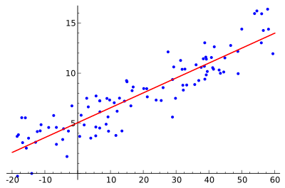
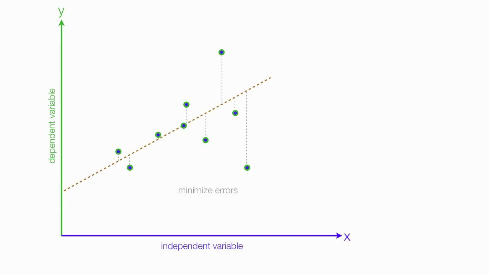
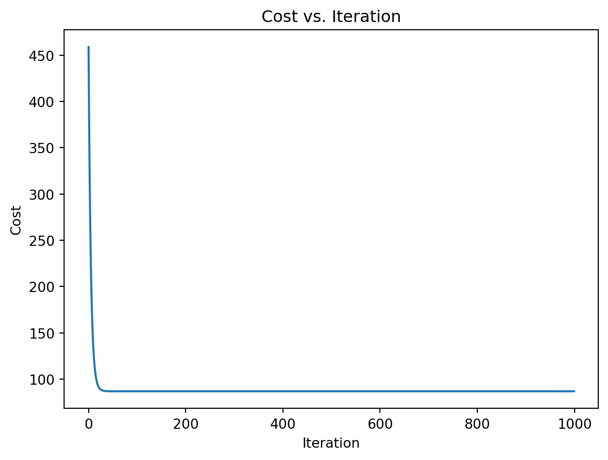
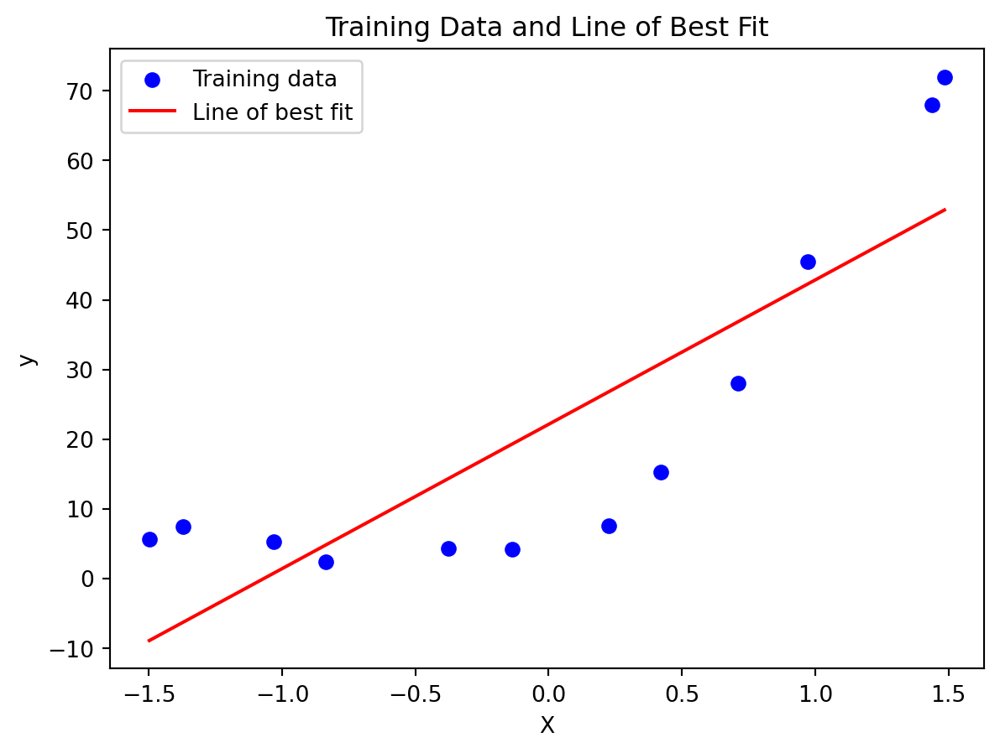

Regression is one of the most common algorithms in machine learning. In this post we will explore this algorithm and we will implement it using Python from scratch.
As the name suggests this algorithm is applicable for Regression problems. Linear Regression is a Linear Model. Which means, we will establish a linear relationship between the input variables(X) and single output variable(Y). When the input(X) is a single variable this model is called Simple Linear Regression and when there are mutiple input variables(X), it is called Multiple Linear Regression. Additionally, non-linear regression seeks to establish a non-linear relationship between the input variable (x) and the output (Y)
Simple Linear Regression
We discussed that Linear Regression is a simple model. Simple Linear Regression is the simplest model in machine learning.
Model Representation
In this problem we have an input variable - X and one output variable - Y. And we want to build linear relationship between these variables. Here the input variable is called Independent Variable and the output variable is called Dependent Variable. We can define this linear relationship as follows:\[Y = \beta_0 + \beta_1 X\]
The \(\beta_1\) is called a scale factor or coefficient and \(\beta_0\) is called bias coefficient. The bias coeffient gives an extra degree of freedom to this model. This equation is similar to the line equation \(y = mx +b\) with \(m = \beta_1\)(Slope) and \(b = \beta_0\)(Intercept). So in this Simple Linear Regression model we want to draw a line between X and Y which estimates the relationship between X and Y.
But how do we find these coefficients? That’s the learning procedure. We can find these using different approaches. One is called Ordinary Least Square Method and other one is called Gradient Descent Approach. We will use Ordinary Least Square Method in Simple Linear Regression and Gradient Descent Approach in Multiple Linear Regression in post.
Ordinary Least Square Method
Earlier in this post we discussed that we are going to approximate the relationship between X and Y to a line. Let’s say we have few inputs and outputs. And we plot these scatter points in 2D space, we will get something like the following image.

And you can see a line in the image. That’s what we are going to accomplish. And we want to minimize the error of out model. A good model will always have least error. We can find this line by reducing the error. The error of each point is the distance between line and that point. This is illustrated as follows.

And total error of this model is the sum of all errors of each point. ie.
\[
D = \sum_{i=1}^{m} d_i^2
\]
\(d_i\)Distance between line and ith point.
\(m\)- Total number of points
You might have noticed that we are squaring each of the distances. This is because, some points will be above the line and some points will be below the line. We can minimize the error in the model by minimizing \(D\) And after the mathematics of minimizing \(D_i\), we will get;
We are going to use a dataset containing the price of houses as a function of size. This data is split into 3 for training, validation and finally testing. Let’s start off by importing and viewing the data.
#Import the needed librariesimport pandas as pdimport matplotlib.pyplot as pltimport jsonimport numpy as npwithopen('assignment1.json', 'r') as json_file: data = json.load(json_file)X_train = np.array(data['X_train']).reshape(-1, 1)y_train = np.array(data['Y_train']).reshape(-1, 1)X_val = np.array(data['X_val']).reshape(-1, 1)y_val = np.array(data['Y_val']).reshape(-1, 1)X_test = np.array(data['X_test']).reshape(-1, 1)y_test = np.array(data['Y_test']).reshape(-1, 1)array1 = data['X_train']array2 = data['Y_train']array3 = data['X_val']array4 = data['Y_val']array5 = data['X_test']array6 = data['Y_test']print("Training Data")tableData = {'X_train': array1,'Y_train': array2,}table = pd.DataFrame(tableData)print(table.head(3))print(f"number of rows and colums: {table.shape}")print()print("Validation Data")tableData2 = {'X_Val': array3,'Y_Val': array4}table2 = pd.DataFrame(tableData2)print(table2.head(3))print(f"number of rows and colums: {table2.shape}")print()print("Test Data")tableData3 = {'X_test': array5,'Y_test': array6}table3 = pd.DataFrame(tableData3)print(table3.head(3))print(f"number of rows and colums: {table3.shape}")
Training Data
X_train Y_train
0 661.5 4.25
1 465.0 2.30
2 1442.0 68.00
number of rows and colums: (12, 2)
Validation Data
X_Val Y_Val
0 650.0 4.170
1 682.5 4.067
2 1417.0 31.870
number of rows and colums: (21, 2)
Test Data
X_test Y_test
0 405.0 3.316
1 330.0 5.400
2 135.0 1.300
number of rows and colums: (21, 2)
As we can see, the data is split unequally between training, validation and testing. The training data has 12 entries while the validation and testing data have 21 entries.
This is the procedure. Here \(\alpha\) is the learning rate. This operation \(\frac{\partial}{\partial \theta_j} J(\theta)\) means we are finding partial derivate of cost with respect to each \(\theta_j\). This is called Gradient.
Read this if you are unfamiliar with partial derivatives.
In step 2 we are changing the values of \(\theta_j\). in a direction in which it reduces our cost function. And Gradient gives the direction in which we want to move. Finally we will reach the minima of our cost function. But we don’t want to change values of \(\theta_j\). drastically, because we might miss the minima. That’s why we need learning rate.
Animation illustrating the gradient descent method
The above animation illustrates the Gradient Descent method.
But we still didn’t find the value of \(\frac{\partial J(\theta)}{\partial \theta_j}\) . After we applying the mathematics. The step 2 becomes.
Here \(\hat{y_i}\) is the \(i^{th}\) predicted output values.
# Step 6: Evaluate the model using the testing dataX_test_extended = np.column_stack((np.ones_like(X_test), X_test))theta_test, _, cost = ridge_regression(X_train_extended, y_train, best_alpha, num_iterations, learning_rate)y_test_pred = X_test_extended @ theta_testmse_test = np.mean((y_test - y_test_pred) **2)print(f"Mean Squared Error on Test Data: {mse_test}")print(cost)
Mean Squared Error on Test Data: 81.66385694629241
234.9787954527312
# Plot the cost history during trainingplt.plot(range(num_iterations), history)plt.xlabel('Iteration')plt.ylabel('Cost')plt.title('Cost vs. Iteration')plt.show()

Plotting the training data and line of best fit
# Plot training data and line of best fitplot_data_and_fit(X_train, y_train, theta)print(theta)

[[22.10833333]
[20.73627522]]
\[
House Price = 22.108 + 20.736 \times House size
\]
Nonlinear Regression
# Step 4: Train the model using the training dataalpha =10# Regularization strength (adjust as needed)num_iterations =1000learning_rate =0.1degree =3# Degree of the polynomial features# Create polynomial featuresX_train_poly = np.column_stack([X_train ** i for i inrange(1, degree +1)])# Train the model using polynomial featuresX_train_poly = np.column_stack((np.ones_like(X_train_poly), X_train_poly))theta, history_train, cost_train = ridge_regression(X_train_poly, y_train, alpha, num_iterations, learning_rate)print(f"Training cost: {cost_train}")print(theta)# Step 5: Tune the regularization parameter using the validation dataalphas = [0.01, 0.1, 1, 10, 100]mse_val = []for alpha in alphas:# Create polynomial features for validation data X_val_poly = np.column_stack([X_val ** i for i inrange(1, degree +1)]) X_val_poly = np.column_stack((np.ones_like(X_val_poly), X_val_poly)) theta_val, history_val, cost_val = ridge_regression(X_val_poly, y_val, alpha, num_iterations, learning_rate) y_val_pred = X_val_poly @ theta_val mse = np.mean((y_val - y_val_pred) **2) mse_val.append(mse)""" # Plot the cost history for both training and validation plt.plot(range(num_iterations), history_train, label='Training Cost', color='blue') plt.plot(range(num_iterations), history_val, label='Validation Cost', color='red') plt.xlabel('Iteration') plt.ylabel('Cost') plt.title('Cost vs. Iteration') plt.legend() plt.show()"""best_alpha = alphas[np.argmin(mse_val)]print(f"Best regularization parameter (alpha): {best_alpha}")# Step 6: Evaluate the model using the testing data# Create polynomial features for test dataX_test_poly = np.column_stack([X_test ** i for i inrange(1, degree +1)])X_test_poly = np.column_stack((np.ones_like(X_test_poly), X_test_poly))theta_test, _, cost_test = ridge_regression(X_test_poly, y_test, best_alpha, num_iterations, learning_rate)y_test_pred = X_test_poly @ theta_testmse_test = np.mean((y_test - y_test_pred) **2)print(f"Mean Squared Error on Test Data: {mse_test}")# Plot training data and the polynomial fitplt.scatter(X_train, y_train, color='blue', label='Training data')x_values = np.linspace(min(X_train), max(X_train), 100).reshape(-1, 1)x_values_poly = np.column_stack([x_values ** i for i inrange(1, degree +1)])x_values_poly = np.column_stack((np.ones_like(x_values_poly), x_values_poly))y_values = x_values_poly @ thetaplt.plot(x_values, y_values, color='red', label=f'Polynomial Fit (Degree {degree})')plt.xlabel('X')plt.ylabel('y')plt.title('Training Data and Polynomial Fit')plt.legend()plt.show()
Training cost: 104.19514186498827
[[3.51715242]
[3.51715242]
[3.51715242]
[5.00411734]
[8.66812878]
[6.78627004]]
Best regularization parameter (alpha): 0.01
Mean Squared Error on Test Data: 19.60464293191099